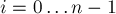
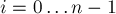

MAXimal
добавлено: 11 Jun 2008 11:09
редактировано: 24 Oct 2010 23:40
Содержание [скрыть]
Нахождение наибольшей нулевой подматрицы
Дана матрица  размером
размером  . Требуется найти в ней такую подматрицу, состоящую только из нулей, и среди всех таких — имеющую наибольшую площадь (подматрица — это прямоугольная область матрицы).
. Требуется найти в ней такую подматрицу, состоящую только из нулей, и среди всех таких — имеющую наибольшую площадь (подматрица — это прямоугольная область матрицы).
Тривиальный алгоритм, — перебирающий искомую подматрицу, — даже при самой хорошей реализации будет работать . Ниже описывается алгоритм, работающий за  , т.е. за линейное относительно размеров матрицы время.
, т.е. за линейное относительно размеров матрицы время.
Алгоритм
Для устранения неоднозначностей сразу заметим, что  равно числу строк матрицы , соответственно,
равно числу строк матрицы , соответственно,  — это число столбцов. Элементы матрицы будем нумеровать в
— это число столбцов. Элементы матрицы будем нумеровать в  -индексации, т.е. в обозначении
-индексации, т.е. в обозначении ![a[i][j]](../tex2png/cache/60cf76e819ed3733bf887dc748d4b3ef.png) индексы
индексы  и
и  пробегают диапазоны , .
пробегают диапазоны , .
Шаг 1: Вспомогательная динамика
Сначала посчитаем следующую вспомогательную динамику: ![d[i][j]](../tex2png/cache/a18f11689b09b23faa10c78d6b244cf8.png) — ближайшая сверху единица для элемента . Формально говоря, равно наибольшему номеру строки (среди строк диапазоне от
— ближайшая сверху единица для элемента . Формально говоря, равно наибольшему номеру строки (среди строк диапазоне от  до ), в которой в -ом столбце стоит единица. В частности, если такой строки нет, то полагается равным (это можно понимать как то, что вся матрица как будто ограничена снаружи единицами).
до ), в которой в -ом столбце стоит единица. В частности, если такой строки нет, то полагается равным (это можно понимать как то, что вся матрица как будто ограничена снаружи единицами).
Эту динамику легко считать двигаясь по матрице сверху вниз: пусть мы стоит в -ой строке, и известно значение динамики для предыдущей строки. Тогда достаточно скопировать эти значения в динамику для текущей строки, изменив только те элементы, в которых в матрице стоят единицы. Понятно, что тогда даже не требуется хранить всю прямоугольную матрицу динамики, а достаточно только одного массива размера :
vector<int> d (m, -1); for (int i=0; i<n; ++i) { for (int j=0; j<m; ++j) if (a[i][j] == 1) d[j] = i; // вычислили d для i-ой строки, можем здесь использовать эти значения }
Шаг 2: Решение задачи
Уже сейчас мы можем решить задачу за  — просто перебирать в текущей строке номер левого и правого столбцов искомой подматрицы, и с помощью динамики вычислять за
— просто перебирать в текущей строке номер левого и правого столбцов искомой подматрицы, и с помощью динамики вычислять за  верхнюю границу нулевой подматрицы. Однако можно пойти дальше и значительно улучшить асимптотику решения.
верхнюю границу нулевой подматрицы. Однако можно пойти дальше и значительно улучшить асимптотику решения.
Ясно, что искомая нулевая подматрица ограничена со всех четырёх сторон какими-то единичками (либо границами поля), — которые и мешают ей увеличиться в размерах и улучшить ответ. Поэтому, утверждается, мы не пропустим ответ, если будем действовать следующим образом: сначала переберём номер нижней строки нулевой подматрицы, затем переберём, в каком столбце мы будем упирать вверх нулевую подматрицу. Пользуясь значением , мы сразу получаем номер верхней строки нулевой подматрицы. Осталось теперь определить оптимальные левую и правую границы нулевой подматрицы, — т.е. максимально раздвинуть эту подматрицу влево и вправо от -го столбца.
Что значит раздвинуть максимально влево? Это значит найти такой индекс  , для которого будет d[i][j]">, и при этом — ближайший такой слева для индекса . Понятно, что тогда даёт номер левого столбца искомой нулевой подматрицы. Если такого индекса вообще нет, то положить (это означает, что мы смогли расширить текущую нулевую подматрицу влево до упора — до границы всей матрицы ).
, для которого будет d[i][j]">, и при этом — ближайший такой слева для индекса . Понятно, что тогда даёт номер левого столбца искомой нулевой подматрицы. Если такого индекса вообще нет, то положить (это означает, что мы смогли расширить текущую нулевую подматрицу влево до упора — до границы всей матрицы ).
Симметрично можно определить индекс  для правой границы: это ближайший справа от индекс такой, что d[i][j]"> (либо , если такого индекса нет).
для правой границы: это ближайший справа от индекс такой, что d[i][j]"> (либо , если такого индекса нет).
Итак, индексы и , если мы научимся эффективно их искать, дадут нам всю необходимую информацию о текущей нулевой подматрице. В частности, её площадь будет равна .
Как же искать эти индексы и эффективно при фиксированных и ? Нас удовлетворит только асимптотика  , хотя бы в среднем.
, хотя бы в среднем.
Добиться такой асимптотики можно с помощью стека (stack) следующим образом. Научимся сначала искать индекс , и сохранять его значение для каждого индекса внутри текущей строки в динамике . Для этого будем просматривать все столбцы слева направо, и заведём такой стек, в котором всегда будут лежать только те столбцы, в которых значение динамики строго больше . Понятно, что при переходе от столбца к следующему столбцу требуется обновить содержимое этого стека. Утверждается, что требуется сначала положить в стек столбец (поскольку для него стек "хороший"), а затем, пока на вершине стека лежит неподходящий элемент (т.е. у которого значение ![d \le d[i][j+1]](../tex2png/cache/7626da875d0916986ff685e9a127990f.png) ), — доставать этот элемент. Легко понять, что удалять из стека достаточно только из его вершины, и ни из каких других его мест (потому что стек будет содержать возрастающую по
), — доставать этот элемент. Легко понять, что удалять из стека достаточно только из его вершины, и ни из каких других его мест (потому что стек будет содержать возрастающую по  последовательность столбцов).
последовательность столбцов).
Значение для каждого будет равно значению, лежащему в этот момент на вершине стека.
Ясно, что поскольку добавлений в стек на каждой строчке происходит ровно штук, то и удалений также не могло быть больше, поэтому в сумме асимптотика будет линейной.
Динамика для нахождения индексов считается аналогично, только надо просматривать столбцы справа налево.
Также следует отметить, что этот алгоритм потребляет  памяти (не считая входные данные — матрицу ).
памяти (не считая входные данные — матрицу ).
Реализация
Эта реализация вышеописанного алгоритма считывает размеры матрицы, затем саму матрицу (как последовательность чисел, разделённых пробелами или переводами строк), и затем выводит ответ — размер наибольшей нулевой подматрицы.
Легко улучшить эту реализацию, чтобы она также выводила саму нулевую подматрицу: для этого надо при каждом изменении  запоминать также номера строк и столбцов подматрицы (ими будут соответственно
запоминать также номера строк и столбцов подматрицы (ими будут соответственно ![d[j]+1](../tex2png/cache/16feed5b0bc695d7a84bb7ac1d73668d.png) , , , ).
, , , ).
int n, m; cin >> n >> m; vector < vector<int> > a (n, vector<int> (m)); for (int i=0; i<n; ++i) for (int j=0; j<m; ++j) cin >> a[i][j]; int ans = 0; vector<int> d (m, -1), d1 (m), d2 (m); stack<int> st; for (int i=0; i<n; ++i) { for (int j=0; j<m; ++j) if (a[i][j] == 1) d[j] = i; while (!st.empty()) st.pop(); for (int j=0; j<m; ++j) { while (!st.empty() && d[st.top()] <= d[j]) st.pop(); d1[j] = st.empty() ? -1 : st.top(); st.push (j); } while (!st.empty()) st.pop(); for (int j=m-1; j>=0; --j) { while (!st.empty() && d[st.top()] <= d[j]) st.pop(); d2[j] = st.empty() ? m : st.top(); st.push (j); } for (int j=0; j<m; ++j) ans = max (ans, (i - d[j]) * (d2[j] - d1[j] - 1)); } cout << ans;